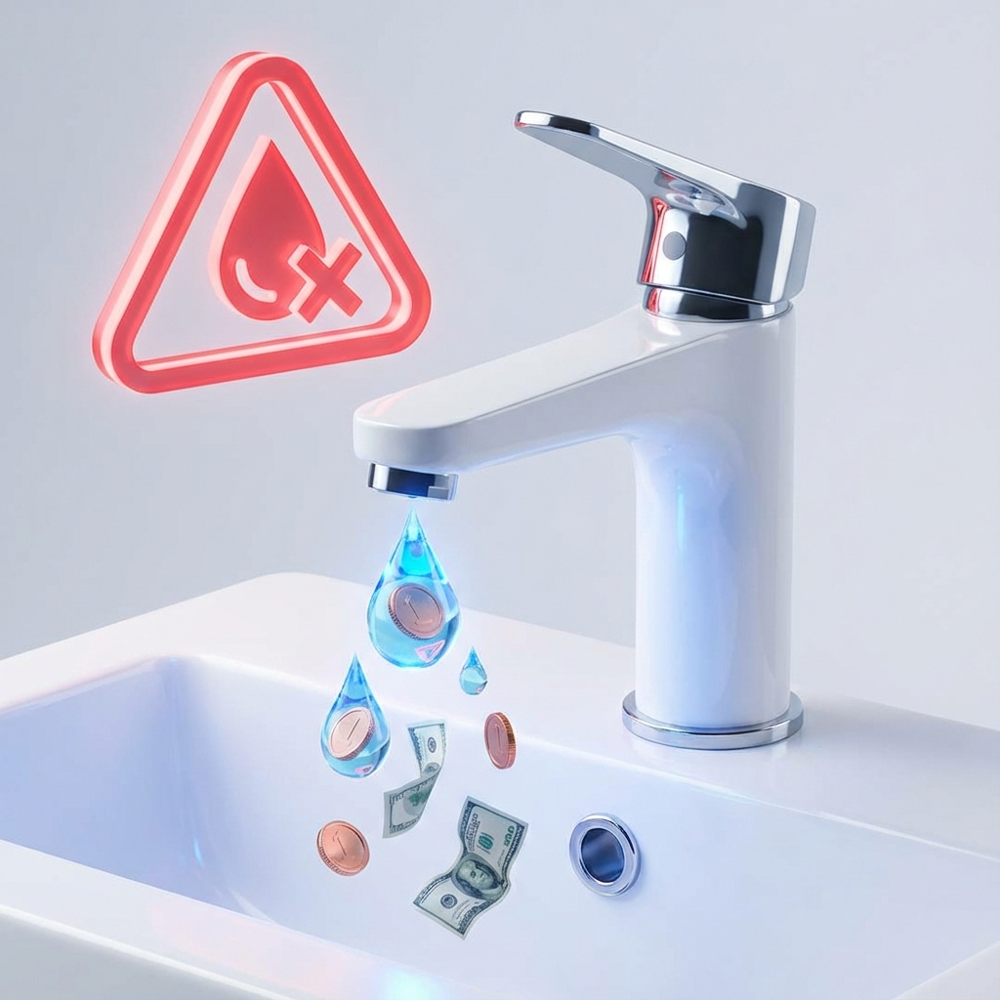
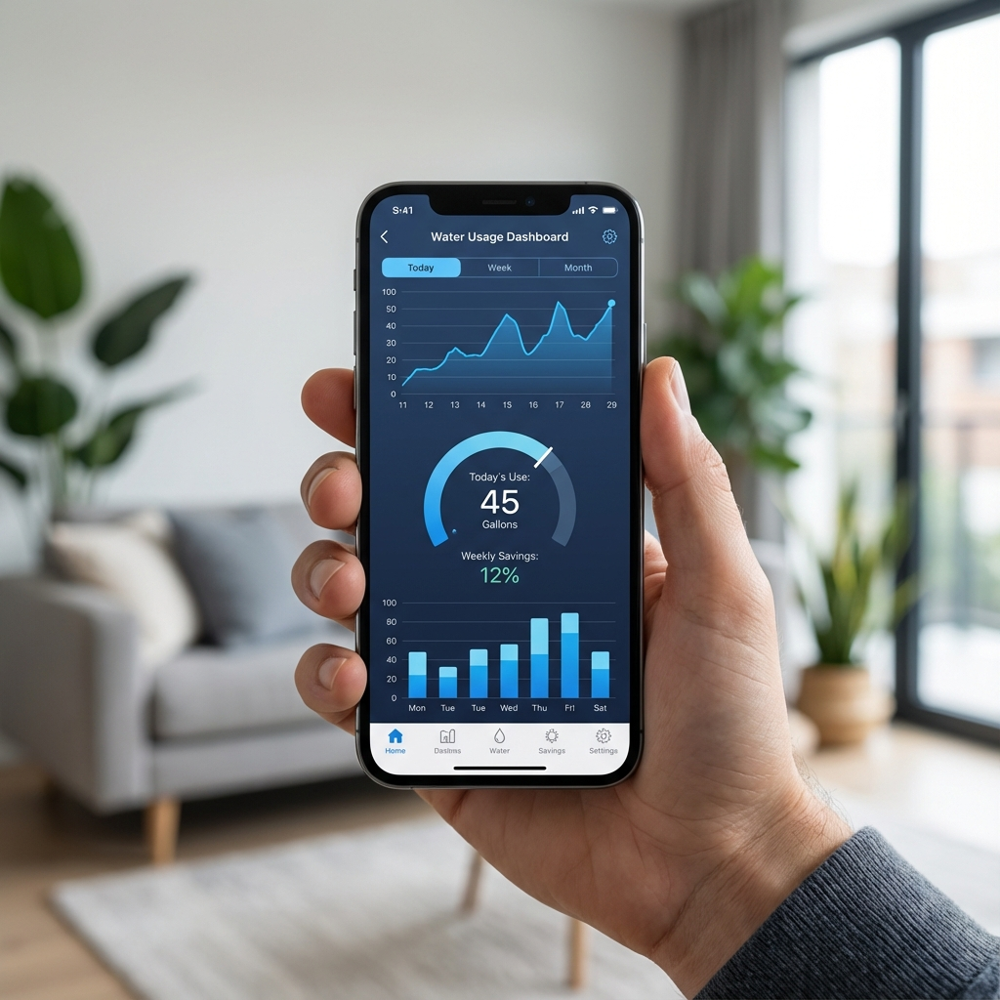

Gospodinjstva
Odkrijte puščanje, preden pride račun. Pametni vodomer ARSS vas obvesti takoj.
Zakaj pametni vodomer?
Problem

Visok račun za vodo? WC kotliček pušča in vi tega ne veste. Puščanje lahko mesečno stane 50€+.
Rešitev

Pametni vodomer zazna puščanje in vas takoj obvesti na telefon. Ugasnete vodo in se izognete visokemu računu.
Rezultat
Družine prihranijo do 30% stroškov za vodo. Povprečno 300€ letno!
Kako deluje v 3 korakih
1. Namestitev
Naš tehnik v 1 uri zamenja vaš star vodomer s pametnim. Brez gradnje, brez trganja.
Izvedi več2. Spremljanje
Prenesite mobilno aplikacijo AURA in spremljajte porabo kadarkoli. Grafični prikazi, zgodovina, primerjave.
Izvedi več3. Varčevanje
Sistema vas obvesti, če zazna puščanje ali neobičajno porabo. Ukrepajte takoj in varčujte!
Izvedi več1. Brezskrbna Namestitev
Pozabite na razbijanje in umazanijo. Naša ekipa poskrbi za vse.
Zamenjava starega vodomera s pametnim ultrazvočnim števcem je rutinski postopek, ki ga naši strokovnjaki opravijo hitro in profesionalno. Ne posegamo v vašo inštalacijo dlje, kot je potrebno.
Potek namestitve:
- Brez gradbenih del: Menjava poteka na obstoječem priključnem mestu.
- Trajanje: Povprečno le 45-60 minut.
- Preizkus: Takojšnje testiranje tesnjenja in komunikacije.
- Uvajanje: Kratka predstavitev delovanja sistema uporabniku.
Čas dela
Nereda
Ali Pametna Nadgradnja?
Imate novejši vodomer? Nadgradimo ga!
Če imate obstoječ vodomer, ki je še v dobrem stanju, lahko nanj namestimo pametni modul. S tem pridobite večino funkcij pametnega omrežja brez menjave števca.
*Opomba: Nekatere napredne funkcije (kot je zaznavanje mikropuščanj) so odvisne od natančnosti vašega trenutnega vodomera.
Kaj pridobite z nadgradnjo?
- Avtomatsko odčitavanje: Brez mesečnega popisa stanja.
- Alarmiranje: Obvestila o prekomerni porabi.
- Nižji strošek: Cenejša rešitev od menjave celotnega števca.
- Preprosta montaža: Modul se le "klikne" na obstoječ števec.
Namestitev
Funkcij
2. Pametno Spremljanje
Vaša poraba vode na dlani. Kadarkoli, kjerkoli.
Aplikacija AURA vam omogoča vpogled v porabo vode v realnem času. Preverite, koliko vode porabite med tuširanjem, zalivanjem vrta ali pranjem perila.
Funkcije aplikacije:
- Grafični prikazi: Dnevni, tedenski in mesečni pregledi porabe.
- Limiti porabe: Nastavite omejitve in prejemajte opozorila.
- Primerjave: Primerjajte porabo s preteklimi obdobji.
- Izvoz podatkov: CSV izvoz za lastno analizo.
Dostop
Mobil & Web
3. Aktivno Varčevanje
Sistem, ki plača samega sebe.
Največji prihranki ne pridejo iz "manj tuširanja", ampak iz odprave nevidnih puščanj. WC kotliček, ki tiho pušča, vas lahko stane 200€ letno. Mi to preprečimo.
Kaj pridobite?
Povprečni letni prihranek na računu
Mirna vest z alarmi za izliv
Primer: Andrej iz Celja je prihranil 450€, ker je sistem zaznal počeno cev na vrtu.
Paketi za gospodinjstva
Izberite paket, ki ustreza vašim potrebam. Vsi paketi vključujejo mobilno aplikacijo.
Srebrni
Osnovno spremljanje za varčne družine.
- ✓ Pametni vodomer iPerl
- ✓ Mesečni pregled porabe
- ✓ Opozorila za puščanje
- ✓ Mobilna aplikacija
- ✓ Brez vezave
Zlati
Popoln nadzor in mir v vaši hiši.
- ✓ Vse iz Srebrnega paketa
- ✓ Spremljanje v realnem času 24/7
- ✓ Takojšnja obvestila (SMS + push)
- ✓ Napredna analitika porabe
- ✓ Opozorila za zmrzal
- ✓ Prioritetna podpora
Pogosta vprašanja
Naš certificiran tehnik pride na vaš naslov, odstrani star vodomer in v približno 1 uri namesti novega. Namestitev ne zahteva dodatnih gradbenih del. Po namestitvi vam pokaže, kako uporabljati aplikacijo.
Ne! Pametni vodomer uporablja mobilno omrežje (NB-IoT tehnologijo), zato deluje popolnoma samostojno brez vašega WiFi-ja ali interneta. Podatke lahko gledate na telefonu kjerkoli.
Povprečna družina prihrani 20-30% stroškov za vodo, kar je približno 300€ letno. Največji prihranki nastanejo z zgodnjim odkrivanjem puščanj (pušča WC, pipe) in bolj zavestno porabo.
Vodomer ostane na naslovu (je last vodovoda ali lastnika stanovanja). Lahko pa prenehate z mesečno naročnino kadarkoli, brez stroškov. V primeru selitve vas bomo z veseljem povezali z novim lastnikom.
Absolutno! Vsi podatki so šifrirani in shranjeni v skladu z GDPR predpisi. Vidite lahko samo svoje podatke. Nobenih osebnih informacij ne prodajamo tretjim osebam.
Zainteresirani?
Stopite v stik z nami za brezplačen informativni sestanek ali ponudbo.